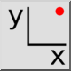
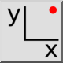

Koordinate
Werkzeugleiste / Symbol:
 

Menü: Fang > Koordinate
Tastenkürzel: S, X
Kommandos: snapcoordinate | sx
Beschreibung:
Bestimmt einen Punkt indem die absolute oder relative kartesische Koordinate
eingegeben wird.
Vorgehensweise:
- Starten Sie dieses Werkzeug wenn Sie einen Punkt definieren wollen indem
Sie dessen Koordinate eingeben.
- Geben Sie die gewünschte Koordinate in der Optionenwerkzeugleiste ein und
wählen Sie ob es ein relative oder absolute Koordinate ist. Relative
Koordinate beziehen sich auf die Position des relativen Nullpunktes.
- Klicken Sie die Schaltfläche mit dem Häkchen oder drücken Sie die
Entertaste um die Eingabe zu bestätigen und die Koordinate einzugeben: